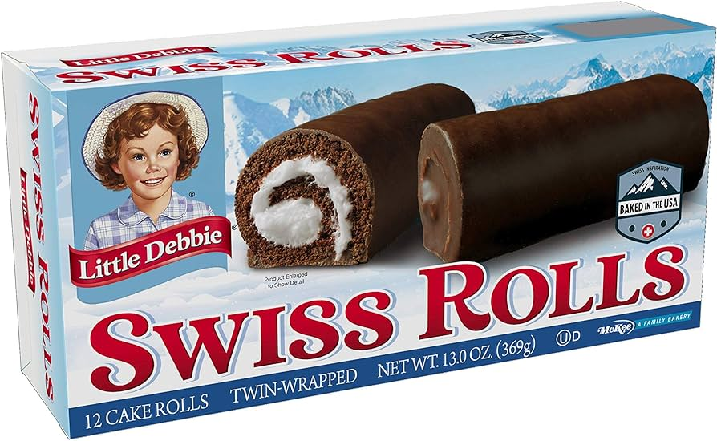

#1 Nutty Buddy
Crunchy and soft at the same time, everybody needs a nutty buddy.
And congrats for getting this far.
Crunchy and soft at the same time, everybody needs a nutty buddy.
V. v. good in my memories but I should try them again soon to be sure!
For a long time my favs, but I got too used to their extreme sweetness. Now demoted to #3, sorry sorry!

Also a long time favorite; even better when it comes straight from the freezer!A clear seasonal favorite!
I guess the box says it all.
Not to be confused with the Zebra Cakes; those rolls appear clearly superior. An exquisite and rare find!
The PB is clearly a fav but sadly those are a bit too dry :(( Nutty Buddies way better!!
Surprisingly good! But I'm not crazy about fruity in general.
I should try those again one day; not sure how to rank them, but I don't have awful memories of them.
I think I enjoyed those when I was craving sweet; not sure I'd love them on a regular day.
Weird unexpected chewiness...
Texture is cool but the vanilla flavoring is... well...
You think it should be Oreo flavored given the packaging, don't be fooled. Come out slightly better after microwaving.
I just have no words for those. I cannot tell for sure the topping is not made of microplastics.